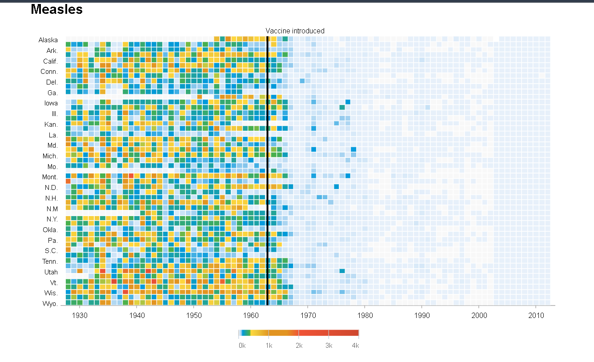
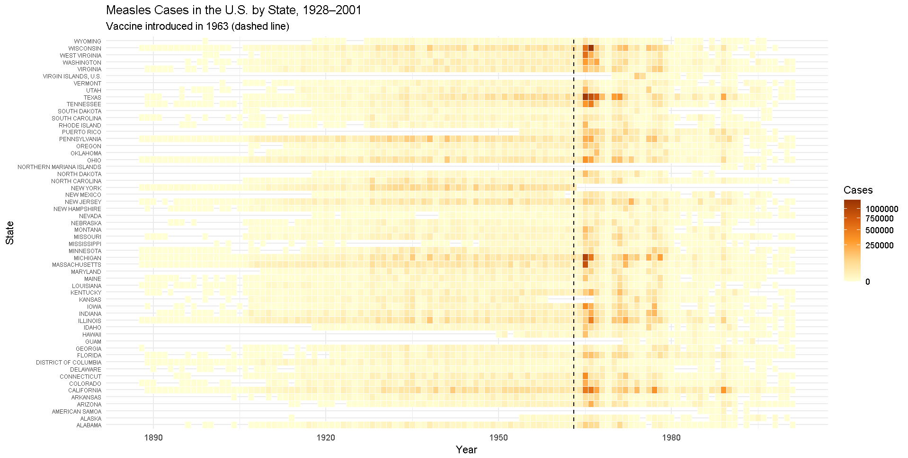
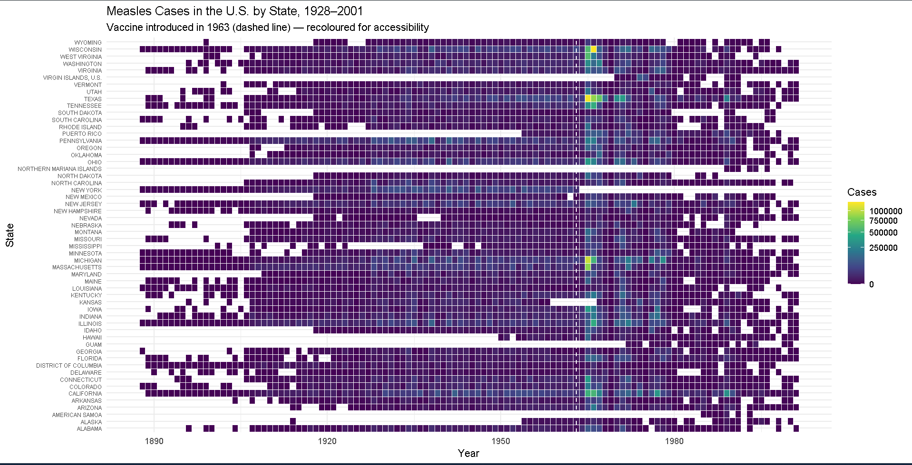

Copy the master, then recolour it
About this exercise
[Summarise the exercise objective in your own words — e.g. "this exercise asked me to find a data visualisation made by a skilled designer, recreate it using my own tool, and then produce an alternative colour scale that follows responsible colour-use guidelines."]
The master visualisation

The recreated visualisation is a heatmap showing annual measles case counts across U.S. states from approximately 1928 to 2002. It shows much higher numbers of measles cases before 1963, followed by a sharp decline after the introduction of the measles vaccine, marked by a dashed vertical line. The visualisation was recreated in R using ggplot2 and includes both the original-style yellow-to-red colour scheme and a colour-blind-safe viridis version.
My recreation & recolour


Why viridis?
I chose the viridis colour scale because it provides a more accessible and responsible alternative to the original yellow-to-red scale. Yellow-to-red colour gradients can be difficult for some people with colour-vision deficiencies to distinguish clearly, and differences between colours may not correspond consistently to differences in the underlying data. Viridis is designed to be colour-blind-safe and perceptually uniform, meaning that equal changes in the data are represented by approximately equal visual changes in colour. It also remains interpretable when converted to greyscale, making the visualisation more accessible and consistent with responsible data visualisation principles.
Data card
| Title | Battling Infectious Diseases in the 20th Century: The Impact of Vaccines (Measles heatmap) — recreated by K. Ibrahim |
|---|---|
| Summary | The recreated visualisation is a heatmap showing annual measles case counts across U.S. states from approximately 1928 to 2002. It shows much higher numbers of measles cases before 1963, followed by a sharp decline after the introduction of the measles vaccine, marked by a dashed vertical line. The visualisation was recreated in R using ggplot2 and includes both the original-style yellow-to-red colour scheme and a colour-blind-safe viridis version. |
| Data Sources | Van Panhuis, W., Cross, A., & Burke, D. (2018). Counts of Measles reported in United States of America: 1888-2002 (Version 2.0) [Data set]. Project Tycho. https://doi.org/10.25337/T7/ptycho.v2.0/US.14189004 Original visualisation reference: DeBold, T., & Friedman, D. (2015, February 11). Battling infectious diseases in the 20th century: The impact of vaccines. The Wall Street Journal. https://graphics.wsj.com/infectious-diseases-and-vaccines/ |
| Mapping | X-axis: Year — weekly measles case counts aggregated to annual totals, approximately 1928–2002 (Van Panhuis et al., 2018) Y-axis: U.S. state — using the Admin1Name field (Van Panhuis et al., 2018) Colour: Annual measles case count per state — sequential colour scale (Van Panhuis et al., 2018) |
| Important Notes | The original weekly measles counts were preprocessed by aggregating all available weekly observations into annual totals for each U.S. state. The recreated heatmap uses raw case counts rather than population-adjusted rates per 100,000 people, so differences between states may partly reflect differences in population size. Missing or incomplete weekly observations can affect annual totals, meaning some state-year values may represent incomplete reporting rather than zero cases. An unusually large value was also observed around 1963; because it appeared suspiciously high compared with surrounding observations, it was treated as a possible data-quality artifact rather than being assumed to represent a confirmed real spike. The Project Tycho data are provided under the Creative Commons Attribution 4.0 International (CC BY 4.0) licence, which allows reuse with appropriate attribution. |
| Access | You can get a copy of the data used to build this visualisation by downloading it from Project Tycho via Zenodo: https://zenodo.org/records/1289771 (Van Panhuis et al., 2018) |
References
DeBold, T., & Friedman, D. (2015, February 11). Battling infectious diseases in the 20th century: The impact of vaccines. The Wall Street Journal. https://graphics.wsj.com/infectious-diseases-and-vaccines/
Van Panhuis, W., Cross, A., & Burke, D. (2018). Counts of Measles reported in United States of America: 1888-2002 (Version 2.0) [Data set]. Project Tycho. https://doi.org/10.25337/T7/ptycho.v2.0/US.14189004